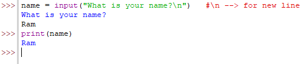

Taking input in Python
Input function is used to interact with users to get data.
Python 2.7 offers two built in functions to read data from the keyboard.
raw_input()
It returns string always.
input()
Not recommended in 2.7.
In Python 3.x, raw_input() has been renamed as input()
Syntax:
inp = input("Statement")
Example 1: 
Example 2:
In above example, we got error when we incremented the x by 1, it's because string type value (5 in this case) cannot be add with integer type value (1 in this case).
By default input() returns string type value.
So we need to do type casting to convert from string to int.
Type casting with input():
Type conversion or type casting refers to the method to convert one data type to another. Mainly type casting can be done using int(), float(), str(), tuple(), set(), list(), or dict() functions.
Example 3:
Example 4:
Taking multiple inputs
Example 5:
--> split() is a function to split the input() function into multiple values.
--> By default, split() divide the string with respect to space between them.
--> Below is the example where the input string will be divided by comma (,).
Example 6:
Output Statement in Python
print() function is used to print output in python. This function allows us to display text, variables, and expressions.
Example:
In this example, “Hello World!” is a string literal enclosed within double quotes. Above example written in python 3.x. Let's see some below example for python 2.7.
print "Hello World!"
print 5
We focus on python 3.x.
We can assigns values to variables name and age, then prints them with labels.
Example:
print() --> prints a blank line. It is a line separator.
Example:
Difference between print("Hello"+"World") and print("Hello","World")
Example:
print() function insert spaces between objects automatically.
Syntax:
print(*Objects, sep=' ', end='\n', file=sys.stout, flush=false)
sep attribute
The sep parameter in Python is used with the print() function to specify the separator between the arguments. By default, the separator is a space character, but you can customize it to any character, integer, or string of your choice. It is found only in python 3.x or later.
Example:
end attribute
In Python, the end parameter in the print() function controls what character(s) are printed at the end of the printed text. By default, print() ends with a newline character (\n), which means that each call to print() will print the output on a new line. However, you can customize the behavior using the end parameter.
Example:
More Example:
Formatted string with print() function
Using % Operator
% values are replaced with zero or more value of elements.
%i --> integer type
%d --> integer type
%f --> float type
%s --> string type
%x --> hexadecimal type
%o --> octal type
Syntax:
print("formatted string" %(Variable list))
Example:
Using format() method
Example:
Using f-string
Example:
Next »